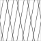
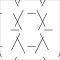
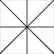
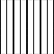
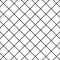
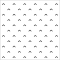
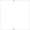
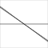
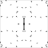

23 symbolen â hiërarchisch gegroepeerd op zoekfilter (V-/B-varianten genegeerd voor groepering)
| Niveau 1 | Niveau 2 | Niveau 3 | Niveau 4 | Symbool (bestand) | Afbeelding | Status |
|---|---|---|---|---|---|---|
| AOG | AOG-BELEMMERING | AOG-BELEMMERING-SO | | neutraal | ||
| AOG-BELEMMERING-SOD | neutraal | |||||
| AOG-BELEMMERING_LEIDINGSTR | AOG-BELEMMERING_LEIDINGSTR-SOD | | neutraal | |||
| AOG-BELEMMERING_LEIDINGSTRSO | AOG-BELEMMERING_LEIDINGSTRSO |  | neutraal | |||
| AOG-BELEMMERING_OBJECT | AOG-BELEMMERING_OBJECT-SO | | neutraal | |||
| AOG-BELEMMERING_OBJECT-SOD |  | neutraal | ||||
| AOG-BESCHERMDSTADSGEZICHT | AOG-BESCHERMDSTADSGEZICHT-SO | neutraal | ||||
| AOG-BORDES | AOG-BORDES-SO |  | neutraal | |||
| AOG-LUIFEL | AOG-LUIFEL-SO |  | neutraal | |||
| AOG-MILIEUBESCHERMINGSGEB | AOG-MILIEUBESCHERMINGSGEB-SO | | neutraal | |||
| AOG-MILIEUBESCHERMINGSGEB-SOD | neutraal | |||||
| AOG-OVERB | AOG-OVERB_MET | AOG-OVERB_MET_KOPPELBALKEN | AOG-OVERB_MET_KOPPELBALKEN-SO | | neutraal | |
| AOG-OVERB_ZONDER | AOG-OVERB_ZONDER_KOPPELBALK | AOG-OVERB_ZONDER_KOPPELBALK-SO |  | neutraal | ||
| AOG-ZONE | AOG-ZONE_ECOZONE | AOG-ZONE_ECOZONE-SO | | neutraal | ||
| AOG-ZONE_ECOZONE-SOD |  | neutraal | ||||
| AOG-ZONE_GEVAARLIJKE | AOG-ZONE_GEVAARLIJKE_STOF | AOG-ZONE_GEVAARLIJKE_STOF-SO |  | neutraal | ||
| AOG-ZONE_GEVAARLIJKE_STOF-SOD | | neutraal | ||||
| AOG-ZONE_HOOGSPANNINGSTRACE | AOG-ZONE_HOOGSPANNINGSTRACE-SO | | neutraal | |||
| AOG-ZONE_HOOGSPANNINGSTRACE-SOD |  | neutraal | ||||
| AOG-ZONE_LEIDINGSTROOK | AOG-ZONE_LEIDINGSTROOK-SO | | neutraal | |||
| AOG-ZONE_LEIDINGSTROOK-SOD |  | neutraal | ||||
| AOG-ZONE_LPG | AOG-ZONE_LPG-SO | | neutraal | |||
| AOG-ZONE_LPG-SOD | neutraal |